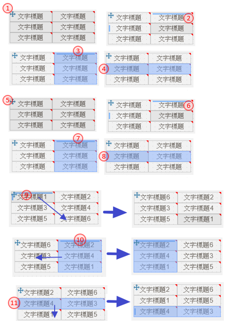

如如-智慧軟體機器人
如如-智慧軟體機器人
IDE操作手冊 13 報表的設計
#摘要說明： 報表是單筆或是大量資料輸出的一種型態，以滿足作業上的需求。報表的宣告時機適在敘述作業流程時。後續再將其屬性及規格逐一補充完整。
##流程架構

13.1 作業報表的宣告
報表被宣告(declare) 的方法有二:
-
- 由架構樹 的作業流程裡的流程裡, 使用單據, 同時建立作業報表的名稱
-
- 直接在架構樹的作業流程上, 新增作業報表。
13.1.1 新增報表
參考資料
方法一：由作業流程節點，直接新增報表

- 架構樹上的「作業流程」節點，利用滑鼠右鍵開啟選單後
- 點選單內的新增項，進入第二層的選單
- 選擇新增表報，開啟【新增表單／報表】頁面
方法二：在流程清單裡，建立新報表

- 在流程清單裡的活動類型選擇：報表
- 駐留表單／報表名稱欄位，會出現【單據清單】，點選其新增鍵，就會開啟【新增表單／報表】的頁面

- 類型：選擇 報表
- 名稱：輸入要新增的報表名稱
- 作業代號：輸入要新增的的作業代號，同一專案下不允重複
- 功能說明：描述本張報表的作用
- 使用時機：說明本張報表的操作情況及時機
- 儲存鍵：系統依報表名稱，產生空白版面
13.2 報表版面介紹
作業目的：在不同的版面區域均安排不同用途的操作介面,以方便完成版面的編排。

13.2.1 工具列
功能說明：在編輯模式及瀏覽模式下的按鈕選項有些差異, 以下說明。

- 駐留順序鍵：點選後，開啟【駐留順序】調整各元件駐留順序
- 規格描述鍵：點選後，開啟【規格描述】檢視及設定各元件的規格說明。操作方式請參考［6.1.1］
- 編輯鍵：進入報表版面編輯模式
- 畫面同步鍵：當專案設有多語系時，各版面是獨立設定。可依版面指定的語系為依據，改變其它語系的版面
- 線上說明鍵：點選後，開啟【線上說明】駐留在表單版面說明
- 語系：依據專案多語的設定，可下拉選擇不同語系的版面內容；選擇後依指定的語系顯示該語系版面內容
- 複製鍵：點選後，開啟【複製報表元件】可複製其它單據存在的元件
- 報表設定鍵：點選後，在屬性區會出現【報表屬性】的畫面，設定基本資訊
- 規格描述鍵：開啟【規格描述】進行規格說明。操作方式請參考［6.1.1］
- 儲存鍵：將排版內容記錄儲存
- 取消鍵：取消排版的異動, 回復到編輯前狀態
- 顯示異動項目鍵：切換是否標示有異動的元件內容
- 對齊工具列_置上鍵：在複選多個元件的狀態下, 以標註的元件為基準, 向上對齊
- 對齊工具列_置下鍵：在複選多個元件的狀態下, 以標註的元件為基準, 向下對齊
- 對齊工具列_置左鍵：在複選多個元件的狀態下, 以標註的元件為基準, 向左對齊
- 對齊工具列_置右鍵：在複選多個元件的狀態下, 以標註的元件為基準, 向右對齊
- 對齊工具列_垂直置中鍵：在複選多個元件的狀態下, 以標註的元件為基準, 垂直置中對齊
- 對齊工具列_水平置中鍵：在複選多個元件的狀態下, 以標註的元件為基準, 水平置中
- 對齊工具列_同寬鍵：在複選多個元件的狀態下, 以標註的元件為基準, 將其它元件設為同寬度
- 對齊工具列_同高鍵：在複選多個元件的狀態下, 以標註的元件為基準, 將其它元件設為同高度
- 屬性區_版面頁：顯示與版面元件類型清單，供拖拉、挑選
- 屬性區_報表頁：顯示及設定報表有關的資訊
- 屬性區_屬性頁：顯示及設定元件、按鍵有關的資訊
13.2.2 編輯區
功能說明：利用拖拉的方式, 在元件清單中,挑選元件到本區域, 移動位置、調整大小, 組成版面所屬的樣式。

- 頁首：顯示報表的主要的資訊區塊
- 頁身：呈現報表指定的資料列內容
- 頁尾：呈現報表表尾要落的條文
13.3 報表屬性設定
功能說明：使用於純粹顯示文字，不需要資料輸入；即，不是輸入欄位的文字顯示。
 |
1. 報表名稱：此報表的命名，使用於規格設定時的資源名稱(resource name) 2. 作業代號：出現在文件旳作業號 3. 報表料號：顯示報表的料號 4. 報表成品料號：顯示報表的成品料號 5. 紙張大小：挑選紙張大小 6. 列印方向：下拉挑選直向／橫向 7. 寛度(pcx)：若紙張大小為制式標準時，此處顯示寛度(pcx),若自訂義時，可依需求自行輸入 8. 寛度(cm)：若紙張大小為制式標準時，此處顯示寛度(pcx),若為自訂義時，可依需求自行輸入 9. 高度(pcx)：若紙張大小為制式標準時，此處顯示高度(pcx),若為自訂義時，可依需求自行輸入 10. 高度(cm)：若紙張大小為制式標準時，此處顯示高度(pcx),若為自訂義時，可依需求自行輸入 11. 背景圖：可利用底圖做為比對位置之用，報表不輸出此內容。開啟[【圖示設定】](16.html#Icon) 12. 邊界＿上：報表保留的上邊界 13. 邊界＿下：報表保留的下邊界 14. 邊界＿左：報表保留的左邊界 15. 邊界＿右：報表保留的右邊界 |
13.4 報表元件類型(component type in form)
作業目的：作業報表的操作畫面是由許多的元件所組成的，基本的元件共14個，包含顯示目的的文字說明與執行時的圖片顯示，以及資料輸入的各類方法元件。
 |
1. 文字標題(label)：顯示標題用 2. 單行文字(TextEdit)：最常使用，顯示有來源資料 3. 多行文字(MultiEdit)：當資料須多行顯示時，可使用 4. 核取方塊(check box)：多項選擇的勾取格 5. 多筆表格(Table)：多欄位且有多筆物件 6. 企業圖示(logo)：目前限定選擇圖示中的公司LOGO 7. 圖片(image)：顯示來源為圖示者 8. 框線(border)：顯示框線用 9. 條碼(Barcode)：條碼格式 10. 崁入圖表：是要崁入統計圖表 |
13.4.1 文字標題(label)
功能說明：使用於純粹顯示固定文字，無關資料來源。
| |
1. 元件類型：說明本元件的類型名稱 2. 元件名稱：此元件的命名 3. 所屬階層：顯示元件的的位階在報表的階層名稱 4. 標題：此元件的顯示在版面上的文字 5. X軸座標：相對於編輯區起點的X軸 6. Y軸座標：相對於編輯區起點的Y軸 7. 寬度：元件的寬度 8. 高度：元件的高度 9. 自訂樣式：此元件的在指定的單元樣式 |
13.4.2 文字方塊(Text)
功能說明：使用於需要一般性文數字資料輸入的元件，可以帶有顯示標題，也可以不要顯示標題。也可以設定是一個純顯示用的欄位。。
 |
1. 元件類型：說明本元件的類型名稱 2. 元件名稱：此元件的命名 3. 所屬階層：顯示元件的的位階在報表的階層名稱 4. X軸座標：相對於編輯區起點的X軸 5. Y軸座標：相對於編輯區起點的Y軸 6. 寬度：元件的寬度 7. 高度：元件的高度 8. 顯示標題：是否有標題的顯示 9. 標題內容：此元件的顯示在版面上的標題文字 10. 標題位置：標題顯示在原文件的上、下、左、右 11. 標題寬度：標題的寬度，若標題位置在上、下時，限定與元件內容同寛度；不允修改 12. 標題高度：標題的高度，若標題位置在左、右時，限定與元件內容同高度；不允修改 13. 自訂樣式：此元件的在指定的單元樣式 |
13.4.3 多行文字(MultiEdit)
功能說明：使用於文字性資料長資料的欄位，可以使用多行空間來收集或呈現資料。其餘屬性與文字方塊(單行) 相同。可以帶有顯示標題，也可以不要顯示標題；也可以設定是一個純顯示用的欄位，操作者無法鍵入資料。
 |
1. 元件類型：說明本元件的類型名稱 2. 元件名稱：此元件的命名 3. 所屬階層：顯示元件的的位階在報表的階層名稱 4. X軸座標：相對於編輯區起點的X軸 5. Y軸座標：相對於編輯區起點的Y軸 6. 寬度：元件的寬度 7. 高度：元件的高度 8. 顯示標題：是否有標題的顯示 9. 標題內容：此元件的顯示在版面上的標題文字 10. 標題位置：標題顯示在原文件的上、下、左、右 11. 標題寬度：標題的寬度，若標題位置在上、下時，限定與元件內容同寛度；不允修改 12. 標題高度：標題的高度，若標題位置在左、右時，限定與元件內容同高度；不允修改 13. 自訂樣式：此元件的在指定的單元樣式 |
13.4.4 核取方塊(check box)
功能說明：使用於文字性資料長資料的欄位，可以使用多行空間來收集或呈現資料。其餘屬性與文字方塊(單行) 相同。可以帶有顯示標題，也可以不要顯示標題；也可以設定是一個純顯示用的欄位，操作者無法鍵入資料。。
 |
1. 元件類型：說明本元件的類型名稱 2. 元件名稱：此元件的命名 3. 所屬階層：顯示元件的的位階在報表的階層名稱 4. X軸座標：相對於編輯區起點的X軸 5. Y軸座標：相對於編輯區起點的Y軸 6. 寬度：元件的寬度 7. 高度：元件的高度 8. 顯示標題：是否有標題的顯示 9. 標題內容：此元件的顯示在版面上的標題文字 10. 標題位置：標題顯示在原文件的上、下、左、右 11. 標題寬度：標題的寬度，若標題位置在上、下時，限定與元件內容同寛度；不允修改 12. 標題高度：標題的高度，若標題位置在左、右時，限定與元件內容同高度；不允修改 13. 自訂樣式：此元件的在指定的單元樣式 |
13.4.5 多筆表格(Table)
功能說明：使用於在報表上放置圖片，訂出圖片顯示的寬與高。 可以定義圖片標題顯示於此圖片的相對位置，也可以不要顯示標題文字。
 |
1. 水平欄數：指要產生表格的欄數 2. 垂直列數：指要產生表格的列數 3. 預設類型：指定產生標題類型，下拉：元件類型 4. 確認鍵：確認產生依指定欄、列數的表格 5. 元件類型：說明本元件的類型名稱 6. 元件名稱：此元件的命名 7. 所屬階層：顯示元件的的位階在報表的階層名稱 8. X軸座標：相對於編輯區起點的X軸 9. Y軸座標：相對於編輯區起點的Y軸 10. 寬度：元件的寬度 11. 高度：元件的高度 12. 水平欄數：顯示表格的水平欄數 13. 垂直列數：顯示表格的垂直列數 |
13.4.6 企業圖示(logo)
功能說明：
 |
1. 元件類型：說明本元件的類型名稱 2. 元件名稱：此元件的命名 3. 所屬階層：顯示元件的的位階在報表的階層名稱 4. X軸座標：相對於編輯區起點的X軸 5. Y軸座標：相對於編輯區起點的Y軸 6. 寬度：元件的寬度 7. 高度：元件的高度 8. 顯示標題：是否有標題的顯示 9. 標題內容：此元件的顯示在版面上的標題文字 10. 標題位置：標題顯示在原文件的上、下、左、右 11. 標題寬度：標題的寬度，若標題位置在上、下時，限定與元件內容同寛度；不允修改 12. 標題高度：標題的高度，若標題位置在左、右時，限定與元件內容同高度；不允修改 13. 自訂樣式：此元件的在指定的單元樣式 |
13.4.7 圖片(image)
功能說明：使用於在報表上放置圖片，訂出圖片顯示的寬與高。可以定義圖片標題顯示於此圖片的相對位置，也可以不要顯示標題文字。
 |
1. 元件類型：說明本元件的類型名稱 2. 元件名稱：此元件的命名 3. 所屬階層：顯示元件的的位階在報表的階層名稱 4. X軸座標：相對於編輯區起點的X軸 5. Y軸座標：相對於編輯區起點的Y軸 6. 寬度：元件的寬度 7. 高度：元件的高度 8. 顯示標題：是否有標題的顯示 9. 標題內容：此元件的顯示在版面上的標題文字 10. 標題位置：標題顯示在原文件的上、下、左、右 11. 標題寬度：標題的寬度，若標題位置在上、下時，限定與元件內容同寛度；不允修改 12. 標題高度：標題的高度，若標題位置在左、右時，限定與元件內容同高度；不允修改 |
13.4.8 框線(border)
功能說明：
 |
1. 元件類型：說明本元件的類型名稱 2. 元件名稱：此元件的命名 3. 所屬階層：顯示元件的的位階在報表的階層名稱 4. X軸座標：相對於編輯區起點的X軸 5. Y軸座標：相對於編輯區起點的Y軸 6. 寬度：元件的寬度 7. 高度：元件的高度 8. 自訂樣式：此元件的在指定的單元樣式 |
13.4.9 條碼(Barcode)
功能說明：使用於在報表上放置圖片，訂出圖片顯示的寬與高。 可以定義圖片標題顯示於此圖片的相對位置，也可以不要顯示標題文字。
 |
1. 元件類型：說明本元件的類型名稱 2. 元件名稱：此元件的命名 3. 所屬階層：顯示元件的的位階在報表的階層名稱 4. X軸座標：相對於編輯區起點的X軸 5. Y軸座標：相對於編輯區起點的Y軸 6. 寬度：元件的寬度 7. 高度：元件的高度 8. 條碼類型：條碼的類型，下拉：一維條碼／二維條碼 9. 編碼格式：依條碼類型指定格式，當 條碼類型=一維條碼 時, 下拉: Code39 / Code128, 預設: Code128 當 條碼類型=二維條碼 時, 下拉: QRCode / PDF417, 預設: QRCode 10. 自訂樣式：此元件的在指定的單元樣式 |
13.4.10 崁入圖表
功能說明：
 |
1. 元件類型：說明本元件的類型名稱 2. 元件名稱：此元件的命名 3. 所屬階層：顯示元件的的位階在報表的階層名稱 4. X軸座標：相對於編輯區起點的X軸 5. Y軸座標：相對於編輯區起點的Y軸 6. 寬度：元件的寬度 7. 高度：元件的高度 8. 顯示標題：是否有標題的顯示 9. 標題內容：此元件的顯示在版面上的標題文字 10. 標題位置：標題顯示在原文件的上、下、左、右 |
13.5 報表繪製的操作
作業目的：使用於報表版面美化，調整報表元件的寬高、位置。
13.5.1 報表元件移位的操作 ove component location
功能說明：可以單個元件處理，也可以以群組處理。
一般元件：

- 移動位置：當元件的外框出現駐留的陰影時, 即對著元件按下滑鼠左鍵不放, 進行移動, 待確定位置後, 放掉滑鼠左鍵
- 調整寬高：在元件的右下角有一調整的符號, 滑鼠移到該符號上, 按下滑鼠左鍵不放, 進行拖拉動作, 待確定大小後, 放掉滑鼠左鍵
- 圈選多元件: 同時選擇多個元件(左圖)一併做位置上的調整時, 可將滑鼠移到空白處, 按下滑鼠左鍵進行拖拉動作, 將要選擇的元件, 包含在框框內, 放掉滑鼠左鍵, 即產生右圖的結果
- 複製：對元件進行圈選的動作後, Ctrl+C 複製
- 貼上：將已複製的元件貼在目前游標所在位置, Ctrl+V 貼上
- 刪除：圈選元件後, 鍵盤 Delete鍵
- 對齊：對多元件進行圈選的動作後, 被圈選的元件中會出現一個紅色框線的元件(圈選的過程中, 第一個被完全包含在框框內的元件), 則是對齊的基準元件,在點選工具列的對齊項目時, 皆以該元件為標準。
多筆表格元件： 
- 定位指標：滑鼠左鍵長按, 點選本符號, 可拖拉多筆表格位置
- 駐留顯示：當駐留在表格內元件時, 直欄感應條及橫列感應條會駐留在相對位置
- 直欄感應條 : 點選時，可標註單欄
- 橫列感應條 : 點選時，可標註單列
- 定位指標：滑鼠左鍵長按, 點選本符號, 可拖拉多筆表格位置
- 駐留顯示：當駐留在表格內元件時, 直欄感應條及橫列感應條會駐留在相對位置
- 直欄感應條 : 點選時，可標註單欄
- 橫列欄感應條 : 點選時，可標註單列
- 欄位移動：點選單一欄位後，按著滑鼠左鍵拖拉到預定位置後，放開滑鼠後，會把欄位互調
- 整欄移動：點選單一欄後，按著滑鼠左鍵拖拉到預定位置後，放開滑鼠後，會把移動的整欄插在目的欄位之前
13.5.2 編輯狀態的右鍵的操作
功能說明：可以單個元件處理，也可以以群組處理。
 |
新的一般元件： 1. 刪除：刪除本元件 已經過存檔後的元件： 2. 功能敍述鍵：點選後，開啟[【規格描述】](06.html#SpecificationAnnotated)設定本元件的規格說明。操作方式請參考［6.1.1］ 3. 規格定義鍵：點選後，開啟[【規格定義】](06.html#SpecificationDefinition)畫面，並駐留在相關元件上，操作方式請參考［6.2］ |
 |
多筆表格： 4. 駐留單一欄位 5. 此處的刪除欄，是刪除直欄感應條所在的整欄 6. 此處的刪除欄，是刪除橫列欄感應條所在的整列 7. 標註一整欄 8. 可在駐留欄插入一整欄 9. 可新增一整列 10. 此處的刪除欄，是刪除直欄感應條所在的整欄 11. 標註一整列 12. 可新增一整欄 13. 可在駐留欄插入一整列 14. 此處的刪除，是刪除橫列感應條所在的整列 |
 |
階層區塊： 15. 駐留在各階層的版面上 16. 新增鍵：可在版面上新增階層區塊 17. 報表階層：區分為４個固定的階層，頁首／頁身／頁尾／總計，區分為８個變動的階層，由階層一到八 18. 階層位置：可指定分佈在階首或階尾，依勾選的數目產生階層區塊 19. 階層高度：駐留指定在某階區塊時，可設定高度 |
13.5.3 複製其它報表的元件 copy component from a form
功能說明：為了加快報表元件的規格定義，如果知道本專案已完成的報表中有相同的規格，或是部分相同的規格可以參考使用，則可以把它的內容複製過來修改使用；分為完全複製及部分複製。
參考資料：

- 駐留報表工具列，進入報表編輯狀態
- 複製鍵：點選工具列本鍵，開啟【報表版面複製】，操作方式請參考［13.5.3］
- 複製專案：挑選欲複製來源報表的專案，必須具該專案的權限可允檢視
- 關鍵字：輸入要查詢的報表關鍵字
- 搜尋鍵：依據指定的關鍵字，畫面出現符合條件的報表清單
- 報表名稱：指定要複製的來源報表
- 全選/全不選：利用此核取方塊，決定全選/全不選指定報表的所有元件
- 勾選指定：針對報表的元件, 進行勾選／取消的動作
- 複製鍵：將指定的報表元件，所勾選的元件複製到目的報表
13.6 駐留順序設定
功能說明：如果報表操作的欄位順序(按tab 鍵到下一個欄位) 與宣告順序不同，或是經過位置調整過後的順序整理。

- 在報表版面的瀏覽狀態
- 駐留順序鍵：點選工具列本鍵，開啟【駐留順序】 ，操作方式請參考［5.7］
- 移動 : 駐留報表欄位資料列，按住滑鼠往上或往下拖拉到指定的位置，再放掉滑鼠
- 解鎖: 解除鎖定的欄位
- 頂端：把鎖定的多欄位, 移到是前面
- 上移：把駐留的單一欄位或鎖定的多欄位, 往上移
- 下移：把駐留的單一欄位或鎖定的多欄位, 往下移
- 底端：把駐留的單一欄位或鎖定的多欄位, 移到是後面
- 存回: 儲存調整後的駐留順序
- 取消: 取消編修後的內容